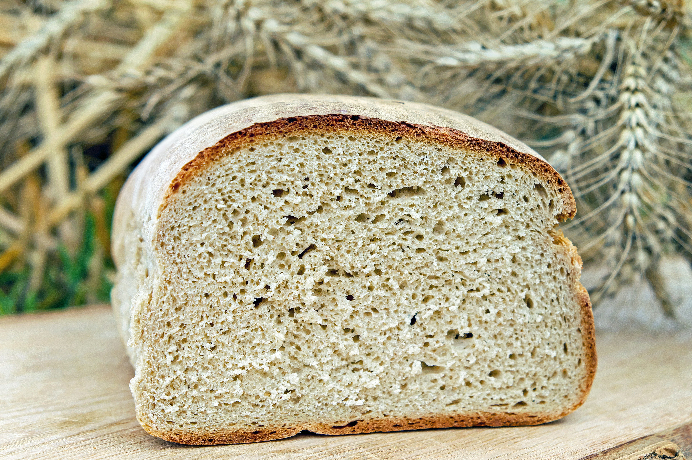

Wheat Bread

Description
The country of Draag is known for its beautiful wheat fields. They are a large importer of all types of wheat products including flour and wheat bread. Here is a simple recipe for making your own delicious wheat bread.
Ingredients
- whole wheat flour
- yeast
- salt
- warm water
- honey
- butter
- oil
Steps
- Heat Oven to 200 Degrees
- Add 3 cups warm water and 1 tbsp of yeast into large mixing bowl and still
- add 2/3 cup of honey and stir again.
- let this proof for five minutes, it will form a creamy foam
- add 1/3 cup of oil, 7 cup of flour, 1 tbsp salt and mix
- keep adding small amounts of flower until the dough pulls away easily from the bowl
- knead by hand for 10 minutes
- with small amount of oil in hand, separade the bread into two loaves and add into two loaf pans
- Place pans in the warm oven. Let the dough rise until it is doubled in size, about 20 minutes
- Turn oven to 350 degrees, leave bread inside
- After 25 minutes, check bread. When it is golden brown, remove from oven
- Let cool and then remove from pan
- Slice
- Enjoy!
Inspired by Modern Honey recipe